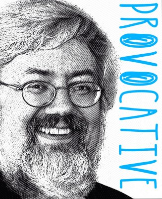

What must we do to bring about a Change initiative as smoothly as possible? Communicate! Communicate! Communicate! How much, and for how long do we do this? Until we get sick and tired of the sound of our own voice – then we take a deep breath and a drink of water and we start all over again. Communication isn’t something that stops and starts; it’s a constant activity before, during and after any Change initiative.
This isn’t exactly news. We sort of get this. I can ask any audience in the world to tell me the ‘secret’ to good Change and they repeat back “Communicate, Communicate and Communicate some more!” as if it’s been forcefully injected into their cerebellum. The problem arises when the questioning becomes a bit more detailed, “What exactly should we communicate?”
The response to that question is usually either a blank stare or the reasonable recitation of the reporter’s standby; Who, What, Where, When, How and Why. Not a bad start. If we’re writing a news article, then these are good solid questions. The Change Management problem requires all of those, and a few others besides. It’s not that the reporter’s questions are a poor tool; it’s just that they don’t address the peculiar psychology of the Change challenge.
When faced with Change – here are the questions that demand answers:
1. WHY? – Why is this particular Change necessary now?
2. WIIFM? (What’s in it for me) – If we don’t address this? They’ll listen to nothing else.
3. MONDAY? – What exactly will we be doing differently tomorrow?
4. WON’T? – What won’t Change?
5. MIGHT? – What might go wrong, and what are our plans to mitigate that?
6. WILL? – What will be difficult and what will we do to make that easier?
7. SIGNPOSTS? – How will we know we’re making progress?
Expositor: 
Peter de Jager
Peter de Jager es un expositor / escritor / consultor, en temas relativos a la Asimilación Racional del Futuro. Ha publicado cientos de artículos en tópicos que van desde solución de problemas, creatividad y cambio sobre el impacto de la tecnología en áreas como, privacidad, seguridad y negocio. Sus artículos han aparecido en The Washington Post, The Wall Street Journal, The Futurist and Scientific American.
Es mejor conocido en audiencias de gerencia de proyectos, por sus esfuerzos en crear concientización responsable del tema Y2K – Por lo cual, recibió varios premios de asociaciones de TI y agencias gubernamentales.
En adición a las presentaciones y seminarios, ha escrito docenas de columnas regulares, incluyendo Association Trends, CIPS across Canadá, Enterprise, Globe & Mail online and Municipal World.
Se ha presentado en más de 40 países y ha sido reconocido mundialmente como expositor humoroso y provocativo. Sus audiencias han incluido el World Economic Forum, The World Bank and The Bank for International Settlements.
Sus presentaciones y talleres son altamente interactivos, divertidos, irreverentes hacia ideas equivocadas y de manera distintiva, provocativos. Él fuerza a la audiencia, demostrando conflictos entre sus creencias y comportamientos, para pensar de manera diferente acerca de lo que piensan que sabían.
Se puede leer su trabajo en la sección de publicaciones de www.technobility.com y se puede ver muchos de sus webinars en: www.vimeo.com/technobility